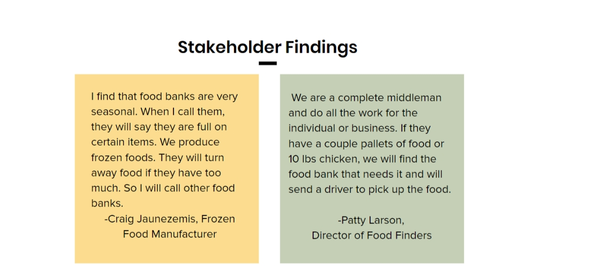
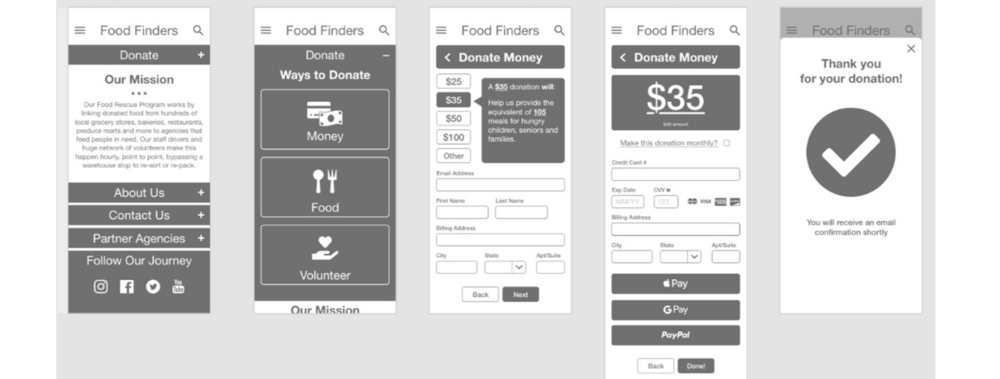
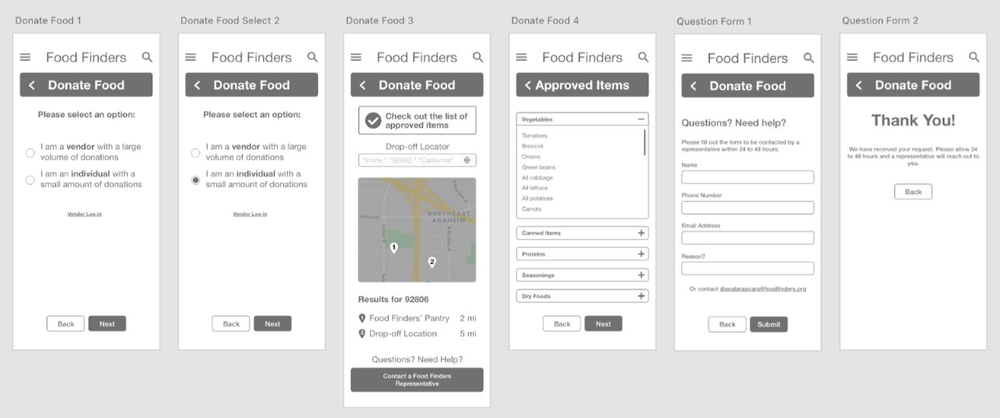
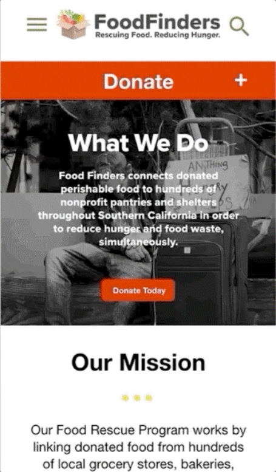

Helping a non-profit
fight food insecurity
through an imporved
donation flow
Food waste is a serious issue in the United States and according to the USDA 30-40% is wasted. Food Finders is a 30 year old nonprofit that specializes in food recovery. We selected this non-profit to improve the donation user flow.
The current design of the Food Finders website has an uninspiring homepage and overwhelming donation forms. In turn, users are driven away from completing the donation process.
Group Project Members:
Amy Kim, Kurtis Chen,
Jessica Fonseca
Tools Used:
Miro, Adobe XD, Invision, Trello
How can we make people’s donations feel impactful?
Where or how can we improve the donation flow?
Participants We Wanted
1. Business owner or employee that wants to help minimize food waste.
2. Interested in volunteering to help others.
3. Have donated to a nonprofit before and/or interested in donating money or time to a nonprofit.
We focused on redesigning for people that would use the website to donate food or donate money to the cause. I personally conducted two stakeholder interviews during our research process.
Affinity Diagram
Through our testing and interviews, we were able to reveal our user’s preference to donate money online and how donating makes them feel good. Users find however, that it is difficult for them to donate money as payment options are not always easy or secure.
During our paper prototyping phase, we were able to establish how we could improve upon the user flow for donating money, food, and volunteering.
paper prototype sketches
low fidelity money donation
low fidelity food donation
Challenges and Compromises
As we had 3 weeks to complete this project, we went from low fidelity to high fidelity very quickly after testing. As a team, we knew if we had more time we would want to run more high fidelity testing as we were able to get another test session in.
Reiteration is very important when it comes to build a user friendly and innovative form process.
We realized how important creating user friendly forms are to the overall redesign and tried our best to ensure that we focused on making that clear.
Next Steps
My favorite part of working as team is ensuring we are staying on deadline, organizing what we have to do, and acknowledging each other's strengths so we can carry that positive energy into our project.
In the future, we would want to support Food Finders with building a mobile app for their volunteers and monthly donors.
Check out the latest prototype:
